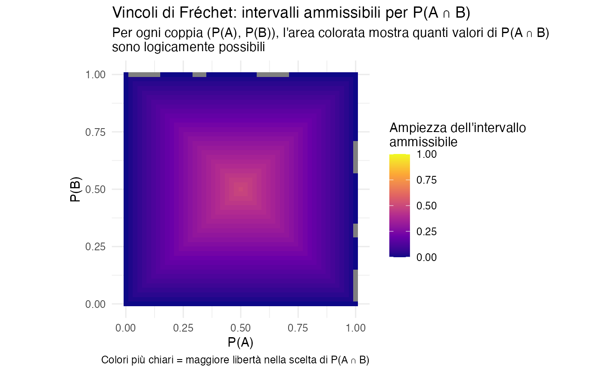
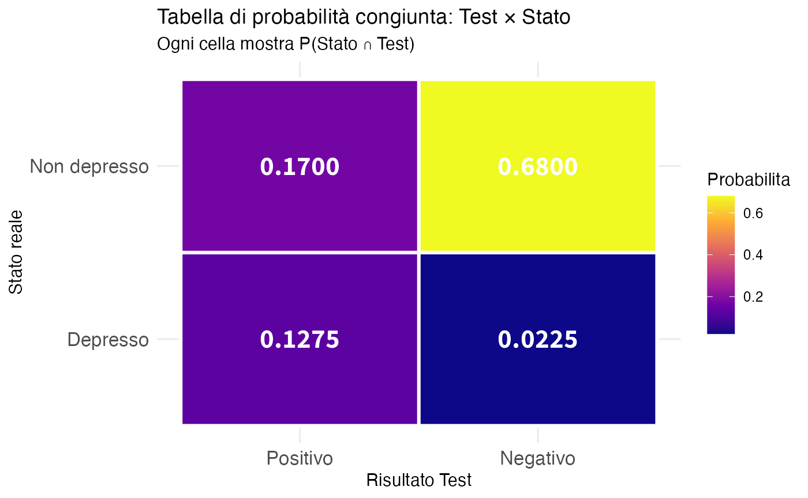
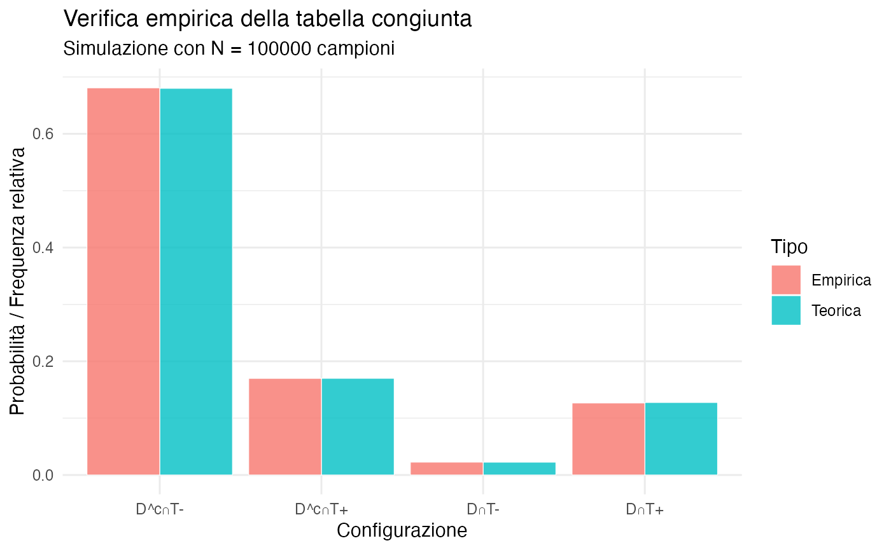
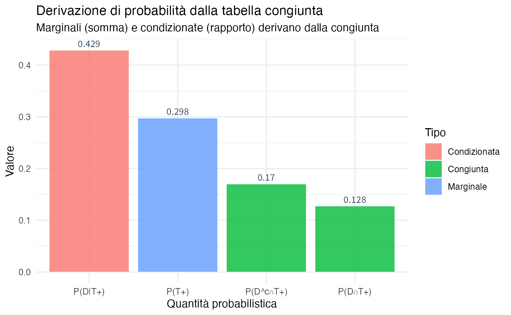
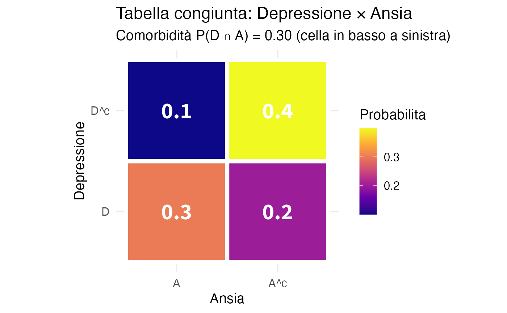
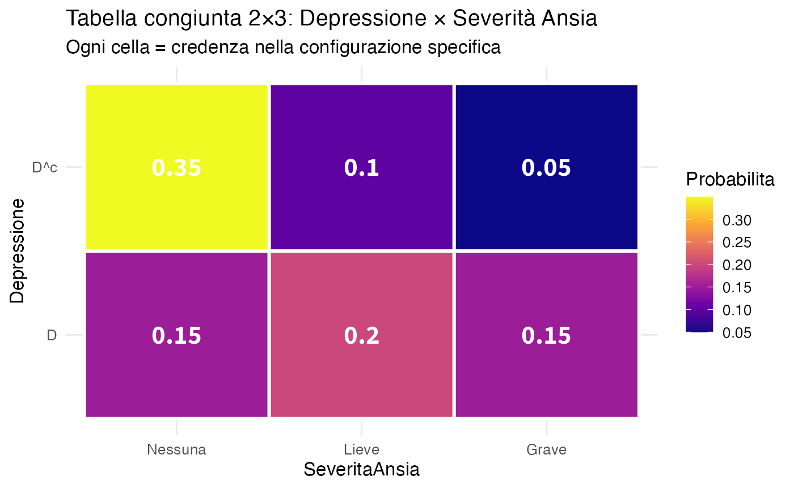

here::here("code", "_common.R") |>
source()
# Load packages
if (!requireNamespace("pacman")) install.packages("pacman")
pacman::p_load(ggplot2, dplyr, tidyr, viridis)2 Assiomi e coerenza delle credenze
Introduzione
Dopo aver introdotto la probabilità come grado di credenza razionale nel Capitolo 1, questo capitolo sviluppa il framework matematico per operare in modo coerente con le credenze. Esploreremo come lo spazio campionario e gli eventi rappresentino possibilità epistemiche, e come gli assiomi di Kolmogorov fungano da vincoli di coerenza logica.
Un aspetto cruciale che affronteremo è la costruzione e manipolazione di tabelle di probabilità congiunta, che costituiscono lo strumento operativo fondamentale per rappresentare credenze su sistemi complessi. Queste tabelle, in particolare nel caso semplice 2×2, rendono esplicita la relazione tra probabilità congiunte, marginali e condizionate, mostrando che tutte le probabilità di interesse derivano da un’unica struttura coerente.
Attraverso esempi psicologici concreti e simulazioni in R, vedremo come diagnosticare e correggere le incoerenze nelle assegnazioni probabilistiche e come verificare empiricamente che le credenze coerenti producano i dati attesi.
Panoramica del capitolo
- Spazio campionario ed eventi come possibilità epistemiche.
- Assiomi di Kolmogorov come vincoli di coerenza.
- Diagnosi di incoerenze: additività e vincoli di Fréchet.
- Tabelle di probabilità congiunta (2×2 e oltre).
- Derivazione di marginali e condizionate da congiunte.
- Verifica empirica della coerenza con simulazioni.
2.1 Spazio campionario come possibilità epistemiche
Nel linguaggio classico, lo spazio campionario \(\Omega\) (o \(S\)) viene definito come “l’insieme di tutti gli esiti possibili di un esperimento casuale”. Nell’approccio bayesiano, tale definizione va reinterpretata in chiave epistemica.
Definizione 2.1 (Spazio campionario (visione bayesiana)) Lo spazio campionario \(\Omega\) rappresenta l’insieme delle possibilità epistemiche compatibili con le informazioni disponibili. Esso non rappresenta ciò che può accadere fisicamente, ma ciò che, dati gli attuali limiti della nostra conoscenza, consideriamo possibile.
2.1.1 Caratteristiche dello spazio campionario epistemico
Dipendente dall’informazione: lo spazio campionario può cambiare si acquisiscono nuove informazioni. Prima di osservare i risultati di un test diagnostico, lo spazio include i i valori {positivo, negativo}. Dopo aver osservato “positivo”, lo spazio si riduce.
Non univoco: ricercatori diversi, con informazioni diverse, possono definire spazi campionari diversi per lo stesso fenomeno.
Costruzione: definire \(\Omega\) richiede di specificare il livello di dettaglio rilevante per la domanda di interesse.
2.2 Eventi come proposizioni sul mondo
Un evento è un sottoinsieme di \(\Omega\) che rappresenta una proposizione sul mondo che può essere vera o falsa.
Definizione 2.2 (Evento) Un evento \(A \subseteq \Omega\) è una proposizione sul mondo a cui possiamo assegnare un grado di credenza \(P(A)\), dato lo stato di informazione corrente.
2.2.1 Operazioni su eventi
Le operazioni insiemistiche classiche hanno interpretazioni epistemiche naturali:
- Unione \(A \cup B\): “La proposizione \(A\) oppure la proposizione \(B\) è vera”.
- Intersezione \(A \cap B\): “Entrambe le proposizioni \(A\) e \(B\) sono vere”.
- Complemento \(A^c\): “La proposizione \(A\) non è vera”.
- Insieme vuoto \(\varnothing\): “Proposizione logicamente contraddittoria (sempre falsa per necessità logica)”.
- Spazio campionario \(\Omega\): “Proposizione logicamente vera: qualcosa accade nell’insieme”.
2.3 Gli assiomi di Kolmogorov come vincoli di coerenza
Nel Capitolo 1 abbiamo visto che gli assiomi di Kolmogorov non sono leggi naturali ma vincoli per evitare incoerenze (il cosiddetto Dutch Book). Qui li formalizziamo e approfondiamo le loro implicazioni.
Definizione 2.3 (Funzione di probabilità (definizione bayesiana)) Una funzione di probabilità \(P: \mathcal{F} \to [0,1]\) assegna a ogni evento \(A\) in una famiglia di eventi \(\mathcal{F}\) un numero \(P(A)\) che rappresenta il grado di credenza nell’affermazione \(A\). Per essere coerente, \(P\) deve soddisfare i seguenti assiomi di coerenza:
Non-negatività: \(P(A) \geq 0\) per ogni evento \(A\).
Normalizzazione: \(P(\Omega) = 1\).
Additività finita: se \(A\) e \(B\) sono eventi disgiunti (\(A \cap B = \varnothing\)), allora \[P(A \cup B) = P(A) + P(B).\]
Additività numerabile (per spazi infiniti): se \(A_1, A_2, \ldots\) è una sequenza di eventi mutuamente disgiunti, allora \[P\left(\bigcup_{i=1}^{\infty} A_i\right) = \sum_{i=1}^{\infty} P(A_i).\]
2.3.1 Interpretazione epistemica degli assiomi
Non-negatività: un grado di credenza negativo non ha senso; zero significa “impossibile dato ciò che so”, uno significa “certo dato ciò che so”.
Normalizzazione: sono certo che qualcosa nello spazio delle possibilità si verificherà. Se \(P(\Omega) < 1\), sto ammettendo la possibilità che nulla di ciò che ho preso in considerazione accada, il che è incoerente.
Additività: se due affermazioni sono mutualmente esclusive, la credenza nella loro disgiunzione è la somma delle credenze separate; violare questo principio porta al cosiddetto Dutch Book.
2.3.2 Conseguenze immediate degli assiomi
Dagli assiomi derivano diverse proprietà utili:
Teorema 2.1 (Proprietà derivate della probabilità)
- Probabilità del complemento: \(P(A^c) = 1 - P(A)\).
- Probabilità dell’insieme vuoto: \(P(\varnothing) = 0\).
- Monotonia: se \(A \subseteq B\), allora \(P(A) \leq P(B)\).
- Regola dell’unione (eventi non disgiunti): \[P(A \cup B) = P(A) + P(B) - P(A \cap B).\]
- Principio di inclusione-esclusione (generalizzazione): \[P(A_1 \cup A_2 \cup A_3) = \sum P(A_i) - \sum P(A_i \cap A_j) + P(A_1 \cap A_2 \cap A_3).\]
Queste proprietà non sono assiomi aggiuntivi, ma conseguenze logiche dei tre assiomi di base. Una volta accettati i vincoli di coerenza, tutto il resto ne consegue necessariamente.
2.4 Diagnosi di incoerenze: casi tipici
Vediamo come identificare e correggere incoerenze comuni nelle assegnazioni probabilistiche.
2.4.1 Incoerenza 1: Violazione dell’additività
L’errore più frequente è violare l’additività per eventi disgiunti, assegnando una probabilità maggiore di quella logicamente possibile.
#> Probabilità assegnate:
#> Depressione Ansia Nessuna
#> 0.6 0.5 0.2
#>
#> Somma totale: 1.3
#> ⚠️ INCOERENZA RILEVATA: Per eventi mutuamente esclusivi ed esaustivi,
#> la somma delle probabilità deve essere esattamente 1.
#> Eccesso di credenza: 0.3Strategie di correzione:
- Normalizzazione proporzionale (se le proporzioni relative sono giudicate corrette):
#> Probabilità normalizzate (mantenendo le proporzioni):
#> Depressione Ansia Nessuna
#> 0.462 0.385 0.154
#> Nuova somma: 1-
Revisione critica (approccio preferibile): rivalutare ciascuna assegnazione alla luce dell’incoerenza scoperta, considerando:
- prevalenze nella popolazione di riferimento;
- evidenze cliniche specifiche del caso;
- possibile sovrastima di condizioni ritenute più salienti.
2.4.2 Visualizzazione dell’incoerenza

2.5 Vincoli di Fréchet per congiunzioni di eventi
Quando consideriamo due eventi che possono verificarsi insieme, la probabilità della loro intersezione \(P(A \cap B)\) non può essere scelta liberamente, ma deve rispettare precisi vincoli matematici.
Teorema 2.2 (Vincoli di Fréchet) Per qualsiasi coppia di eventi \(A\) e \(B\) vale:
\[ \max\{0,\, P(A) + P(B) - 1\} \;\leq\; P(A \cap B) \;\leq\; \min\{P(A), P(B)\}. \]
Interpretazione intuitiva:
- Limite superiore: l’evento “\(A\) e \(B\) insieme” non può essere più probabile dell’evento singolo meno probabile tra \(A\) e \(B\).
- Limite inferiore: se la somma delle probabilità individuali supera 1, allora \(A\) e \(B\) devono sovrapporsi almeno in parte.
2.5.1 Mappa dei valori ammissibili
# Creare griglia di valori
grid <- expand.grid(
P_A = seq(0, 1, by = 0.02),
P_B = seq(0, 1, by = 0.02)
)
# Calcolare vincoli per ogni coppia
grid$limite_inferiore <- pmax(0, grid$P_A + grid$P_B - 1)
grid$limite_superiore <- pmin(grid$P_A, grid$P_B)
grid$ampiezza_lecita <- grid$limite_superiore - grid$limite_inferiore
# Visualizzazione
ggplot(grid, aes(x = P_A, y = P_B, fill = ampiezza_lecita)) +
geom_tile() +
scale_fill_viridis_c(
name = "Ampiezza dell'intervallo\nammissibile",
option = "plasma",
limits = c(0, 1)
) +
labs(
title = "Vincoli di Fréchet: intervalli ammissibili per P(A ∩ B)",
subtitle = "Per ogni coppia (P(A), P(B)), l'area colorata mostra quanti valori di P(A ∩ B) \nsono logicamente possibili",
x = "P(A)",
y = "P(B)",
caption = "Colori più chiari = maggiore libertà nella scelta di P(A ∩ B)"
) +
theme_minimal() +
theme(legend.position = "right") +
coord_fixed()
Come leggere questa mappa:
- 🔵 Blu scuro (angoli): vincoli molto stringenti - pochi valori di \(P(A \cap B)\) sono possibili;
- 🟡 Giallo (centro): massima libertà - molti valori di \(P(A \cap B)\) sono ammissibili;
- Regione in alto a destra: quando \(P(A) + P(B) > 1\), è necessaria una sovrapposizione minima obbligatoria;
- Regione in basso a sinistra: quando \(P(A) + P(B) \leq 1\), la sovrapposizione può essere anche nulla.
Importante per la pratica clinica: questi vincoli ci proteggono dall’assegnare probabilità logicamente impossibili a sintomi che si presentano insieme o a condizioni che co-occorrono.
2.6 Tabelle di probabilità congiunta
Le tabelle di probabilità congiunta sono lo strumento fondamentale per rappresentare le credenze su sistemi con più variabili. Rendono esplicite tutte le relazioni tra gli eventi.
2.6.1 Struttura di una tabella 2×2
Consideriamo due eventi binari \(A\) e \(B\). La tabella congiunta ha questa struttura:
| \(B\) | \(B^c\) | Marginale | |
|---|---|---|---|
| \(A\) | \(P(A \cap B)\) | \(P(A \cap B^c)\) | \(P(A)\) |
| \(A^c\) | \(P(A^c \cap B)\) | \(P(A^c \cap B^c)\) | \(P(A^c)\) |
| Marginale | \(P(B)\) | \(P(B^c)\) | \(1\) |
Proprietà chiave:
- Celle interne: probabilità congiunte (4 valori)
- Marginali di riga: \(P(A) = P(A \cap B) + P(A \cap B^c)\)
- Marginali di colonna: \(P(B) = P(A \cap B) + P(A^c \cap B)\)
- Normalizzazione: la somma di tutte le celle è uguale a 1.
Una volta specificata in modo coerente la tabella congiunta, tutte le altre probabilità ne derivano automaticamente.
2.6.3 Costruzione di una tabella di probabilità congiunta 2×2
2.6.4 Visualizzazione della tabella congiunta

2.6.5 Verifica empirica con simulazione
Possiamo verificare che la tabella congiunta sia coerente simulando dati e confrontando frequenze empiriche con probabilità teoriche.
set.seed(123)
N <- 100000
# Simulare secondo la distribuzione congiunta
# Esiti possibili: (D,T+), (D,T-), (D^c,T+), (D^c,T-)
probs_vector <- c(p_depresso_positivo, p_depresso_negativo,
p_non_depresso_positivo, p_non_depresso_negativo)
outcomes <- sample(1:4, size = N, replace = TRUE, prob = probs_vector)
# Contare frequenze empiriche
freq_empiriche <- table(outcomes) / N
# Confronto
df_verifica <- data.frame(
Configurazione = c("D∩T+", "D∩T-", "D^c∩T+", "D^c∩T-"),
Teorica = probs_vector,
Empirica = as.numeric(freq_empiriche)
)
cat("Confronto teorico vs empirico:\n")
#> Confronto teorico vs empirico:
# Correzione: applica round solo alle colonne numeriche
df_verifica_numeric <- df_verifica
df_verifica_numeric$Teorica <- round(df_verifica_numeric$Teorica, 4)
df_verifica_numeric$Empirica <- round(df_verifica_numeric$Empirica, 4)
print(df_verifica_numeric)
#> Configurazione Teorica Empirica
#> 1 D∩T+ 0.1275 0.1266
#> 2 D∩T- 0.0225 0.0226
#> 3 D^c∩T+ 0.1700 0.1699
#> 4 D^c∩T- 0.6800 0.6809
Interpretazione: le frequenze empiriche convergono verso le probabilità teoriche, confermando che la tabella rappresenta credenze coerenti che producono dati attesi.
2.7 Calcolo di probabilità marginali e condizionate
Una volta costruita una tabella congiunta coerente, possiamo ricavare qualsiasi altra quantità probabilistica di interesse.
2.7.1 Probabilità marginali
Le probabilità marginali si ottengono sommando (marginalizzando) lungo una dimensione:
\[ P(A) = \sum_{B} P(A \cap B) = P(A \cap B) + P(A \cap B^c), \]
\[ P(B) = \sum_{A} P(A \cap B) = P(A \cap B) + P(A^c \cap B). \]
#> Probabilità marginali derivate:
#> P(D) = 0.15
#> P(D^c) = 0.85
#> P(T+) = 0.297
#> P(T-) = 0.7032.7.2 Probabilità condizionate
Le probabilità condizionate si ottengono come rapporti:
\[ P(A \mid B) = \frac{P(A \cap B)}{P(B)}. \]
Interpretazione epistemica: dopo aver appreso che \(B\) è vero, “riduciamo” lo spazio delle possibilità a quelle compatibili con \(B\), e rinormalizziamo.
#> Probabilità condizionate derivate:
#> P(D | T+) = 0.429 (Valore predittivo positivo)
#> P(D | T-) = 0.032 (Probabilità residua dopo test negativo)2.7.3 Visualizzazione: dalla distribuzione congiunta alle probabilità condizionate

2.8 Esercizio guidato: costruire e analizzare una tabella 2×2
Lavoriamo passo-passo sulla costruzione di una tabella congiunta da informazioni psicologiche.
# Parametri
P_D <- 0.50
P_A <- 0.40
P_A_given_D <- 0.60
# Passo 1: Calcolare congiunta P(D ∩ A)
P_D_and_A <- P_A_given_D * P_D
cat("=== COSTRUZIONE TABELLA CONGIUNTA ===\n\n")
#> === COSTRUZIONE TABELLA CONGIUNTA ===
cat("Passo 1: P(D ∩ A) = P(A|D) × P(D) =", P_A_given_D, "×", P_D, "=", P_D_and_A, "\n\n")
#> Passo 1: P(D ∩ A) = P(A|D) × P(D) = 0.6 × 0.5 = 0.3
# Passo 2: Altre celle usando additività
P_D_and_notA <- P_D - P_D_and_A
P_notD_and_A <- P_A - P_D_and_A
P_notD_and_notA <- 1 - (P_D_and_A + P_D_and_notA + P_notD_and_A)
cat("Passo 2: Altre celle\n")
#> Passo 2: Altre celle
cat(" P(D ∩ A^c) =", P_D_and_notA, "\n")
#> P(D ∩ A^c) = 0.2
cat(" P(D^c ∩ A) =", P_notD_and_A, "\n")
#> P(D^c ∩ A) = 0.1
cat(" P(D^c ∩ A^c) =", P_notD_and_notA, "\n\n")
#> P(D^c ∩ A^c) = 0.4
# Passo 3: Verificare coerenza
somma_celle <- P_D_and_A + P_D_and_notA + P_notD_and_A + P_notD_and_notA
cat("Passo 3: Verifica coerenza\n")
#> Passo 3: Verifica coerenza
cat(" Somma celle =", somma_celle, "(deve essere 1) ✓\n\n")
#> Somma celle = 1 (deve essere 1) ✓
# Creare tabella
tab_comorbid <- matrix(
c(P_D_and_A, P_D_and_notA,
P_notD_and_A, P_notD_and_notA),
nrow = 2, byrow = TRUE,
dimnames = list(
Depressione = c("D", "D^c"),
Ansia = c("A", "A^c")
)
)
cat("TABELLA CONGIUNTA FINALE:\n")
#> TABELLA CONGIUNTA FINALE:
print(round(tab_comorbid, 3))
#> Ansia
#> Depressione A A^c
#> D 0.3 0.2
#> D^c 0.1 0.4
cat("\nMARGINALI:\n")
#>
#> MARGINALI:
cat("Riga (Depressione):", round(rowSums(tab_comorbid), 3), "\n")
#> Riga (Depressione): 0.5 0.5
cat("Colonna (Ansia):", round(colSums(tab_comorbid), 3), "\n")
#> Colonna (Ansia): 0.4 0.62.8.2 Rispondere a domande cliniche
#>
#> === DOMANDE CLINICHE ===
#> Q1: P(D ∪ A) = P(almeno una condizione) = 0.6
#> Q2: P(D^c ∩ A^c) = P(nessuna condizione) = 0.4
#> Q3: P(D ∩ A) = P(entrambe le condizioni) = 0.3
#> Q4: P(D | A) = P(Depressione dato Ansia) = 0.75
#>
#> Q5: Test di indipendenza
#> P(D) × P(A) = 0.2
#> P(D ∩ A) = 0.3
#> → Eventi DIPENDENTI (correlati)
#> Differenza: 0.12.8.3 Visualizzazione della tabella congiunta
# Heatmap
df_comorbid <- as.data.frame(as.table(tab_comorbid))
colnames(df_comorbid) <- c("Depressione", "Ansia", "Probabilita")
ggplot(df_comorbid, aes(x = Ansia, y = Depressione, fill = Probabilita)) +
geom_tile(color = "white", size = 2) +
geom_text(aes(label = round(Probabilita, 3)),
color = "white", size = 8, fontface = "bold") +
scale_fill_viridis_c(option = "plasma") +
labs(
title = "Tabella congiunta: Depressione × Ansia",
subtitle = "Comorbidità P(D ∩ A) = 0.30 (cella in basso a sinistra)"
) +
theme_minimal(base_size = 14) +
coord_fixed()
2.9 Estensione a tabelle multidimensionali
Il principio della distribuzione congiunta si generalizza naturalmente a sistemi con più variabili e categorie, permettendo di modellare situazioni cliniche più complesse.
2.9.1 Esempio: depressione e livelli di ansia
Consideriamo uno scenario clinico con due dimensioni:
- Depressione: presenza/assenza (variabile binaria);
- Severità dell’ansia: nessuna/lieve/grave (variabile ternaria).
# Scenario: Depressione × Severità Ansia (Nessuna/Lieve/Grave)
tab_2x3 <- matrix(
c(0.15, 0.20, 0.15, # D: Ansia Nessuna/Lieve/Grave
0.35, 0.10, 0.05), # D^c: Ansia Nessuna/Lieve/Grave
nrow = 2, byrow = TRUE,
dimnames = list(
Depressione = c("D", "D^c"),
Ansia = c("Nessuna", "Lieve", "Grave")
)
)
cat("Tabella 2×3:\n")
#> Tabella 2×3:
print(tab_2x3)
#> Ansia
#> Depressione Nessuna Lieve Grave
#> D 0.15 0.2 0.15
#> D^c 0.35 0.1 0.05
cat("\nMarginali:\n")
#>
#> Marginali:
cat("Depressione:", rowSums(tab_2x3), "\n")
#> Depressione: 0.5 0.5
cat("Ansia:", colSums(tab_2x3), "\n")
#> Ansia: 0.5 0.3 0.2
cat("Totale:", sum(tab_2x3), "\n")
#> Totale: 12.9.2 Visualizzazione della distribuzione congiunta
df_2x3 <- as.data.frame(as.table(tab_2x3))
colnames(df_2x3) <- c("Depressione", "SeveritaAnsia", "Probabilita")
ggplot(df_2x3, aes(x = SeveritaAnsia, y = Depressione, fill = Probabilita)) +
geom_tile(color = "white", size = 1) +
geom_text(aes(label = round(Probabilita, 2)),
color = "white", size = 6, fontface = "bold") +
scale_fill_viridis_c(option = "plasma") +
labs(
title = "Tabella congiunta 2×3: Depressione × Severità Ansia",
subtitle = "Ogni cella = credenza nella configurazione specifica"
) +
theme_minimal(base_size = 12)
Interpretazione clinica:
- 15%: pazienti depressi con ansia grave;
- 20%: pazienti depressi con ansia lieve;
- 35%: pazienti non depressi senza ansia;
- le probabilità marginali mostrano la prevalenza complessiva di ciascuna condizione.
Riflessioni conclusive
In questo capitolo abbiamo gettato le basi matematiche per esprimere e manipolare le nostre credenze in modo rigorosamente coerente.
Spazio campionario epistemico: abbiamo ridefinito lo spazio campionario non come “tutto ciò che può fisicamente accadere”, ma come “tutto ciò che riteniamo possibile”, in base al nostro attuale stato di conoscenza.
Assiomi come garanzia di coerenza: gli assiomi della probabilità non sono leggi della natura, ma come condizioni necessarie per evitare contraddizioni logiche e situazioni di svantaggio certo (Dutch Book).
Vincoli strutturali: i vincoli di Fréchet ci mostrano che le probabilità congiunte non possono essere assegnate arbitrariamente, ma devono rispettare relazioni matematiche precise con le probabilità marginali.
-
La potenza delle tabelle congiunte: la distribuzione congiunta si rivela come la rappresentazione più completa e operativa del nostro stato di credenza. Da questa matrice fondamentale derivano in modo sistematico:
- probabilità marginali (per somma lungo righe o colonne);
- probabilità condizionate (come rapporti tra celle);
- verifiche di indipendenza (confrontando prodotti con congiunte);
- qualsiasi altra quantità probabilistica di interesse.
Validazione attraverso la simulazione: le verifiche empiriche confermano che le credenze coerenti generano pattern di dati attesi, ma è fondamentale ricordare che i dati non definiscono le credenze, bensì le credenze esprimono il nostro stato di incertezza prima di osservare i dati.
2.9.3 Vantaggi per la ricerca e la pratica psicologica
Questo approccio basato su distribuzioni congiunte offre vantaggi concreti:
- trasparenza: tutte le assunzioni probabilistiche sono esplicite e verificabili;
- potere diagnostico: le incoerenze logiche diventano immediatamente visibili e correggibili;
- flessibilità operativa: è semplice incorporare nuove informazioni aggiornando la distribuzione;
- chiarezza comunicativa: le tabelle sono intuitive e accessibili anche per chi non è esperto di statistica.
2.9.4 Prossime direzioni
Nei prossimi capitoli utilizzeremo questo solido framework per:
- esplorare l’equiprobabilità come caso speciale di simmetria epistemica;
- approfondire l’aggiornamento bayesiano attraverso il calcolo delle probabilità condizionate;
- applicare questi strumenti a scenari psicologici sempre più complessi.
Questo capitolo ha stabilito non solo come calcolare probabilità, ma perché certe regole sono necessarie per pensare in modo razionale in situazioni di incertezza.